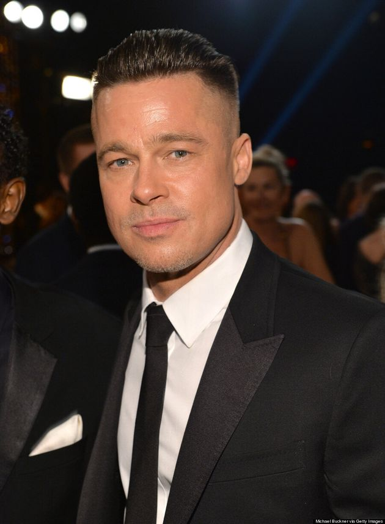
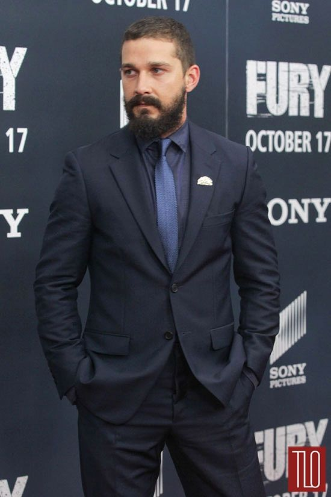
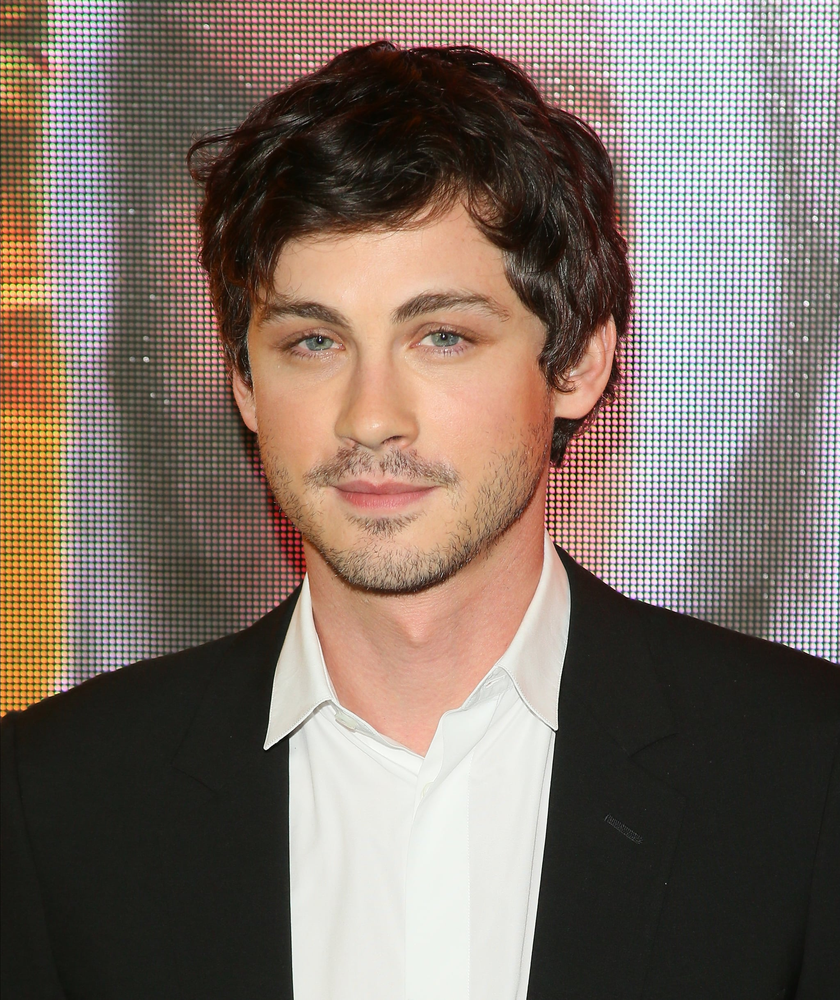
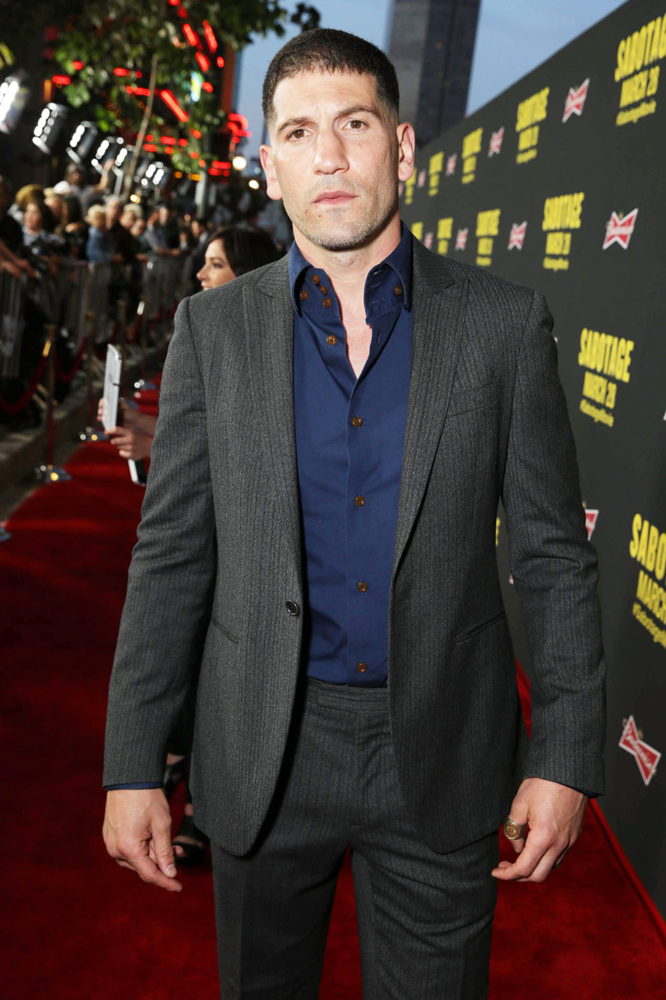

FURY
CAST
Brad Pitt
William Bradley Pitt (born December 18, 1963) is an American actor and film producer. He has received multiple awards, including two Golden Globe Awards and an Academy Award for his acting, in addition to another Academy Award, another Golden Globe Award and a Primetime Emmy Award as producer under his production company, Plan B Entertainment.
"I got endless emails at 3am… just a barrage of back story that never makes the film but certainly informs the character. When I was talking to the veterans, they painted this picture of the exhaustion, the mental fatigue, the cold, the hunger, the accumulative effect of seeing trauma and horror and inflicting horror on a daily basis. We took that apart and began to film."
Info from Brad Pitt's Wikipedia
Shia LaBeouf
Shia Saide LaBeouf, (born June 11, 1986) is an American actor, performance artist, and filmmaker. He played Louis Stevens in the Disney Channel series Even Stevens, a role for which he received a Young Artist Award nomination in 2001 and won a Daytime Emmy Award in 2003. He made his film debut in The Christmas Path (1998). In 2004, he made his directorial debut with the short film Let's Love Hate and later directed a short film titled Maniac (2011), starring American rappers Cage and Kid Cudi.
Info from Shia LaBeouf's Wikipedia
Logan Lerman
Logan Wade Lerman (born January 19, 1992) is an American actor, known for playing the title role in the fantasy-adventure Percy Jackson films. He subsequently played d'Artagnan in 2011's The Three Musketeers, starred in the coming-of-age dramas The Perks of Being a Wallflower (2012), Indignation (2016) and The Vanishing of Sidney Hall (2017), and had major roles in the 2014 films Noah and Fury. In 2020, he returned to television with the series Hunters.
Info from Logan Lerman's Wikipedia
Jon Bernthal
Jonathan Edward Bernthal (born September 20, 1976) is an American actor. He is best known for his portrayal of Shane Walsh on the AMC horror series The Walking Dead (2010–2012; 2018). He has also starred in supporting and leading roles in films such as The Wolf of Wall Street (2013) and Fury (2014), .
Info from Jon Bernthal's Wikipedia
Michael Peña
Michael Anthony Peña (born January 13, 1976) is an American character actor. He has starred in many films, including Crash (2004), Tower Heist (2011), Battle: Los Angeles (2011) and Fury (2014), Peña had the title role in Cesar Chavez (2014) and played the co-lead role in the first season of the Netflix TV series Narcos: Mexico (2018). He was nominated for the Independent Spirit Award for Best Supporting Male for his performance in End of Watch.
Info from Michael Peña's Wikipedia